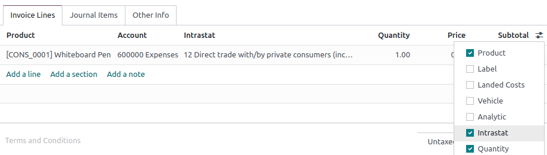

Intrastat¶
Intrastat is the data collection and statistics production system for goods traded among EU member states. It collects data on:
Commercial transactions of goods for use, consumption, investment, or resale with ownership transfer;
Goods movements without transfer of ownership (e.g., stock relocations or moves of goods before or after outsourced production or processing, and after maintenance or repair);
Returns of goods.
Note
Although the Intrastat system continues to be used, the term Intrastat is not used in the latest legislation, referring instead to intra-Union trade in goods statistics.
General configuration¶
Enable the Intrastat report by going to . Under the Customer Invoices section, tick Intrastat and then Save.
Default transaction codes: invoice and refund¶
You can set a default transaction code for all newly created invoice and refund transactions. Under , select a Default invoice transaction code and/or a Default refund transaction code and then Save. The code will be set automatically on all respective invoice lines.
Region code¶
The region code is only used by Belgian companies. Under , select the Company Intrastat Region where the company is located and then Save.
Tip
If your warehouses are located in more than one region, you can define the region code at the level of each warehouse instead. To do so, go to , select a warehouse, set its Intrastat region, and then Save.

Product configuration¶
All products must be properly configured to be included in the Intrastat report.
Commodity code¶
Commodity codes are internationally recognized reference numbers used to classify goods depending on their nature. Intrastat uses the Combined Nomenclature.
To add a commodity code, go to and select a product. Under the Accounting tab, set the product’s Commodity Code.
Quantity: weight and supplementary unit¶
Depending on the nature of the goods, it is necessary to specify either the product’s weight in
kilos (without packaging) or the product’s supplementary unit, such as square meter (m2), number
of items (p/st), liter (l), or gram (g).
To add a product’s weight or supplementary unit, go to and select a product. Under the Accounting tab, depending on the commodity code set, either fill in the product Weight or its Supplementary Units.
Country of origin¶
To add the product’s country of origin, go to and select a product. Under the Accounting tab, set the Country of Origin.
Invoices and bills configuration¶
Once products are properly configured, several settings must be configured on the invoices and bills you create.
Transaction code¶
Transaction codes are used to identify a transaction’s nature. Default transaction codes can be set for invoice and refund transactions.
To set a transaction code on an invoice line, create an invoice or a bill, click the columns selection button, tick Intrastat, and use the newly-added Intrastat column to select a transaction code.
Partner country¶
The partner country represents the vendor’s country for bills and the customer’s country for invoices. It is automatically filled in using the country set in the contact’s Country field.
To edit the partner country manually, create an invoice or a bill, click the Other Info tab, and select the Intrastat Country.
Transport code¶
The transport code identifies the presumed mode of transport used to send the goods (arrival or dispatch).
To add the transport code, create an invoice or a bill, go to the Other info tab, and select the Intrastat Transport Mode.
Value of the goods¶
The value of a good is the untaxed Subtotal (Price multiplied by Quantity) of an invoice line.
Partner configuration¶
Two fields from the partner’s contact form are used with Intrastat: VAT and Country. The country can be manually set on the invoice or bill.
Generate the Intrastat report¶
Generate the report by going to . It is automatically computed based on the default configuration and the information found on the products, invoices and bills, and partners.
Export the report as a PDF, XLSX, or XML file to post it to your legal administration.
Each report line refers to a single invoice line and contains the following information:
Invoice or bill reference number;
System, which is a code automatically generated depending on whether the document is an invoice (dispatch) or a bill (arrival);
Country, which is the vendor’s country for arrivals and the customer’s country for dispatches;
(If your company is located in Belgium) Region Code;
Supplementary Units; and
Value, which is always expressed in euros even if the original invoice or bill used another currency.